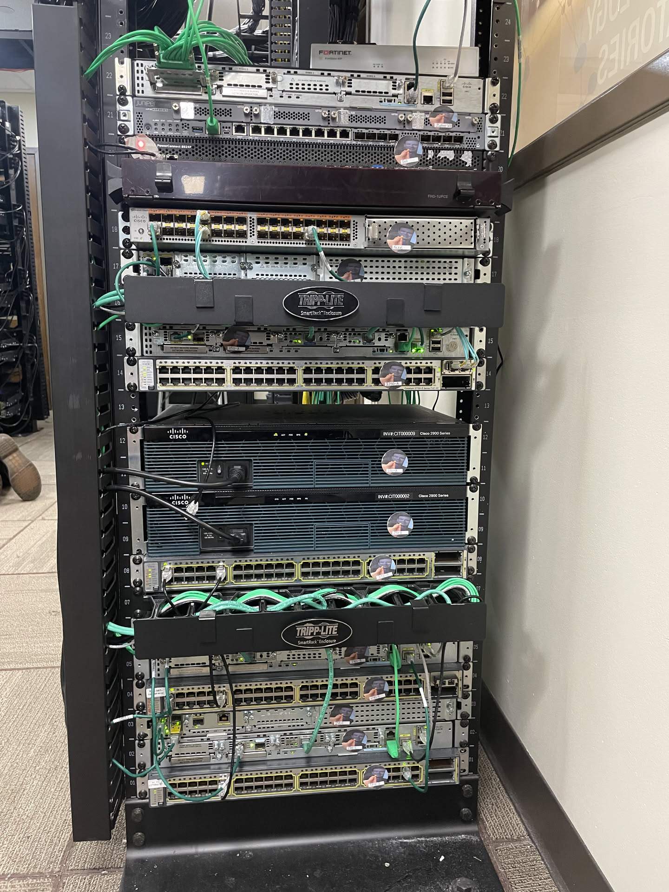

A comprehensive and logically-designed WAN environment architecture
Initial planning for this project architecture began in December 2024, with physical implementation starting in January 2025.
This lab environment was originally born as an idea to implement security architecture in a highly functional setting. Most lab classes and times I have been able to work with networking devices before this point, the network architecture was either exaggerated or not functional to an enterprise in the goal of teaching given concepts. For example, with OSPF virtual links or with OSPF into EIGRP redistribution, the designs of the topologies taught the concepts well in why they were to be implemented, but left me wondering why anyone would ever design a network that way in the first place. In order to make a highly functional network, I set up the topology for two core switches to be the “backbone” (pun-intended) of the network in OSPF Area 0 with a link aggregation of Multi-Mode (MM) fiber between them. Both of them connected to the edge FortiNet FG-40F firewall. I then set up distribution routers off of the two core switches in a partial mesh topology with connections to client and server switches at the access layer, and another router to a second network through a Site-to-Site Virtual Private Network (VPN). The lab incorporated enterprise-grade hardware including Cisco Catalyst 3750e switches (x4), Cisco 2901 routers (x4), Cisco ISR 4331 routers (x3), Cisco 2911 routers (x2), Cisco Nexus 5548UP (x1), Dell PowerConnect 8024F (x1), FortiNet FortiGate 40F Next Generation Firewall (NGFW), and a Juniper SRX 345 Firewall. A detailed architecture mapping table of all of these devices can be viewed below the network diagram.
An animated diagram of the network architecture can be viewed below. Click on any networking device to view their configurations!
| Hostname | Device | Operating System | Role | IP Address | VRFs/VLANs | Description |
|---|---|---|---|---|---|---|
| T-TermSrv | Cisco 2901 Router | IOS 15.7 | Terminal Server / COM Router | 172.16.22.1 | N/A | Terminal Server with Console Connections Into All Other Devices |
| T-Nexus | Cisco Nexus 5548UP | IOS 7.3.13 | VRF 22 Core Switch | 10.26.55.48 | 22,99 | Core OSPF Backbone Switch |
| T-2911-A | Cisco 2911 | IOS 15.7 | OSPF ASBR | 10.26.29.11 | 11,22,99 | ASBR for OSPF, and a backbone router for BGP |
| T-2911-B | Cisco 2911 | IOS 15.7 | Internet Access Gateway | 10.26.29.12 | 11,22,33,99 | BGP Gateway and VRF Concentrator |
| T-ISR-A | Cisco ISR 4331 | IOS 16.12 | OSPF Backbone Router | 10.26.43.31 | 22,99 | OSPF Router, BGP Route Reflector, and VPN Endpoint |
| T-ISR-B | Cisco ISR 4331 | IOS 17.9 | VRRP Default Gateway | 10.26.43.32 | 11,99 | IS-IS Type 1 Router for VRF 11 and VRRP Default Gateway |
| T-ISR-C | Cisco ISR 4331 | IOS 15.5 | IS-IS Router | 10.26.43.33 | 11,99 | IS-IS Type 1 and 2 Router |
| T-2901-A | Cisco 2901 Router | IOS 15.7 | VRF 33 Default Gateway | 10.26.29.1 | 33,99 | VRF GREEN Default Gateway and VPN Endpoint for VRF MGMT |
| T-2901-B | Cisco 2901 Router | IOS 15.7 | Servers Default Gateway | 10.26.29.2 | 22,99 | Default Gateway and DHCP server for devices in the servers subnets |
| T-2901-C | Cisco 2901 Router | IOS 15.7 | VRRP Redundant Router | 10.26.29.3 | 11,99 | Redundant Gateway and Management for client subnets in VRF RED |
| T-2901-D | Cisco 2901 Router | IOS 15.7 | BGP Core Router | 10.26.29.4 | 11,22,99 | IS-IS Type 2 Router and BGP Access Gateway for VRF RED |
| T-2901-E | Cisco 2901 Router | IOS 15.7 | OSPF ASBR | 10.26.29.5 | 11,22,99 | OSPF Router and External BGP Core Router |
| T-3750-Stack | Cisco 3750e | IOS 15.2 | Stacked Access Switch | 10.26.37.50 | 22,99 | Stacked Switch for OSPF Area 1 |
| T-3750-C | Cisco 3750e | IOS 15.0 | Access Switch | 10.26.11.5 | 33,99 | EIGRP VRF GREEN Switch to PC3 |
| T-3750-D | Cisco 3750e | IOS 15.2 | Access Switch | 10.26.30.5 | 22,99 | VRF BLUE and MGMT Access Switch to Servers |
| T-3750-E | Cisco 3750e | IOS 15.2 | Access Switch | 10.26.30.5 | 11,99 | IS-IS VRF RED Switch to PC2 |
The network was set up to allow high traffic functionality and redundancy throughout the core of the network. To review from previous implementations, the routing protocol Open Shortest Path First (OSPF) was used throughout the main site's network with Areas 0, 10, 20, and 30. A Demilitarized Zone was established off of the WAN-edge firewall in area 40 to allow connectivity to Domain Name System (DNS) name servers. To support the growing system's infrastructure, four primary Virtual Local Area Networks (VLANs) were established throughout the network: 10, 20, 30, and 40.

Physical implementation of the network infrastructure
The network displays sophisticated routing and connectivity solutions including:
The network connectivity used throughout the topology was OSPF for the main site and EIGRP for the remote site. In using OSPF, both version 2 and 3 were used for IPv4 and IPv6 connectivity respectively. Message Digest 5 (MD5) passwords were used with OSPFv2, and a keychain was used for OSPFv3 for routing protocol authentication. Similarly, routers were locked down by shutting down unused and extra ports and by disabling both CDP and LLDP as discovery protocols. Overall, this lockdown of network devices and transition to password-based authentication with OSPF was successful and did not result in any dropped connectivity. However, there were some difficulties in routing protocol metrics specifically with the core switches and edge firewall. As the firewall’s primary use is to only route between zones of traffic, having two interfaces within the same zone within OSPF area 0 caused traffic to route inefficiently through the firewall instead of through the fiber link-aggregation on the switches when dealing with intra-zone LAN traffic. To fix this issue, metrics were manually changed on all three networking devices to have the firewall's path be a higher cost than through the other switch. This fixed the issue of needlessly using the firewall's bandwidth and was verified by refreshing at the switches' routing tables.
Next, Enhanced Interior Gateway Routing Protocol (EIGRP) was deployed on the branch site consisting of three Cisco routers in the internal topology. EIGRP in named mode was deployed here, which is not something I previously had experience with. There was not much online about learning to configure it, but I was able to get the hang of working with it after a bit of time. Essentially, instead of having different configuration modes with IPv4 and IPv6 like I previously used with OSPF, the named mode of EIGRP is updated to have the IPv4 and IPv6 address families in the same sub-configuration of EIGRP. As I would come to learn later, BGP does something similar. There was definitely a learning curve with it originally as I misunderstood how the topology base command worked when attempting to learn redistribution. However, I eventually figured it out, and was able to propagate the static route from the T-2911-B to the rest of the EIGRP topology. When it came to client connectivity, I installed a double-wide switchport module into the T-2901-C router and configured the VLAN sub-interfaces. These sub-interfaces acted as the default gateway for the clients to connect through. Finally, after creating some DHCP pools and static routes back down from the Juniper firewall, the configuration of the branch site was finished. All that was left was to connect it back to the main site's headquarters for resource sharing and security.
Note: Yes, in a perfect world there would be a second Active Directory server on the branch site with domain replication to the main headquarters, but that was not configured due to the resources available and time restrictions of the lab’s duration.
A site-to-site VPN was established between the main headquarters and remote sites through a split design in the WAN and access edges. This Cisco T-2901-B router was primarily set up to accept site-to-site VPN connections from its designated peer, the Juniper SRX 345 firewall. Simultaneous tunnels were established for IPv4 and IPv6 connectivity across networks. Due to the nature of the tunneled VPN connection, redistribution across OSPF and EIGRP did not need to be configured. Secondarily, off of this intra-zone router in the LAN network, the T-2901-B router was also set up as a zone-based policy firewall to secure connections to and from the internet. Clients within Area 30 of the network were set up to use this firewall as their first-hop and gateway to the internet. Each interface was put into a zone of either LAN, WAN, or VPN, and specific protocols and access control lists were inspected on a match-basis. Class Maps were placed inside Policy Maps, which were applied on the zone pairings with specific sources and destinations. This combination of the VPN and firewall rules allowed for a fairly robust security solution for traffic passing through the right side of the network.
Remote Access Dial-In User Service (RADIUS) domain-based authentication was established on most networked devices. The only device it was not established on was the ESXi server for management because of the fact that Active Directory was hosted on ESXi. I did not want a catch-22 scenario where Active Directory went down, which would not have allowed me to log in to my ESXi box to manage Active Directory’s VM. The set up for it was done on a Windows Server 2022 VM using Network Policy Server. RADIUS was configured for both IPv4 and IPv6 on all Cisco routers and switches, the Dell switch, and on the Juniper SRX firewall. An address and shared secret key were set to point to the RADIUS server. The only issues that came up were with getting RADIUS authentication to work with T-Nexus, where RADIUS client device attributes were required to allow the logged in user to enter enable mode. The Active Directory infrastructure also hosted certificate services for the central network as a Root Certificate Authority. Certificates were issued for the main WAN firewall for the use of trusted HTTPS webpages and a certificate-based client-access VPN. Finally, the Active Directory infrastructure hosted user accounts to be used with RADIUS in 802.1X port-authentication on client-access switches.
Many layer 2 security precautions were made throughout the access layer of the topology. First, all unused ports including GigabitEthernet, auxiliary, and unused VTY lines were shut down to limit rogue connectivity. For ports going to end devices that were not shutdown, port security was applied, limiting the given number of devices to the usable number of devices in the architecture. A violation of restrict was applied to any device that went over this maximum. Similarly, vtp mode transparent, and on trunk ports going to routers, switchport nonegotiate, were set so that VLAN Trunking Protocol (VTP) could not interfere and affect any switches’ VLAN database tables with new or changed entries. Next, DHCP Snooping and Dynamic ARP Inspection (DAI) were enabled on the switch to further secure how clients get IP addresses and learn about other devices in the network. While the implementation of both was fairly smooth to configure, there was a problem encountered here. A client device without DHCP snooping applied could get an IP address from DHCP, but not with it applied. Several debug commands were used here until it was found to be a problem with how DHCP snooping from the switch interacted with DHCP relay on the default gateway router. More specifically, the GiAddr address field would get replaced with all 0s when coming from the DHCP snooping switch to the router with the DHCP relay address configured. Within the default gateway router with the DHCP relay agent, option 82 was configured to fix this specific issue. What I found most odd though is that this should have been applied by default and would not even show up in the subinterface configuration of the port when set. Either way, setting this allowed clients to get IP addresses again from the DHCP server. Both the DHCP snooping and DAI tables were populating appropriately following this. Finally, for any new changes to the ports on the switch, a pre-authentication ACL was created. This ACL could readily be applied to any port that might need a state change from shutdown in the architecture.
DNS was established on a pair of Alma Linux machines. One was set up as a master or primary server (ns1), and the other (ns2) was set up as a slave or secondary server with AXFR record zone file transfers between the two. Both name servers were set up for DNS security with signed zone files and a higher-level certificate authority. The generated higher level Key Signing Key and Zone Signing Key were ported to the trusted certificate store on both the Linux name servers and internal Active Directory certificate store.
Following this, I set up the name servers similarly as time servers using timectl and chrony. I peered these to the Active Directory domain for time synchronization across the infrastructure.
Finally, on ESXi again, a DHCP server was established using Ubuntu Linux for both IPv4 and IPv6 client connectivity. This process went fairly smoothly and the pools for the main site took immediately when client connectivity was tested, which was a pleasant surprise to see.